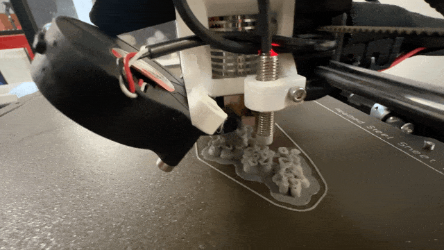
One of the joys of digital fabrication is precision -- you can make exact right angles with ease and cut effortless perfect circles. But it's much harder to make forms that feel warm, human, and organic. Often these processes force us to compress out and forgo all that is messy, spontaneous, sketchy.
This week I wanted to explore what happens when we use digital tools to create a non-digital-seeming object. And because 3D printers are so good at making interlocking forms, I decided to make a chain -- a food chain.
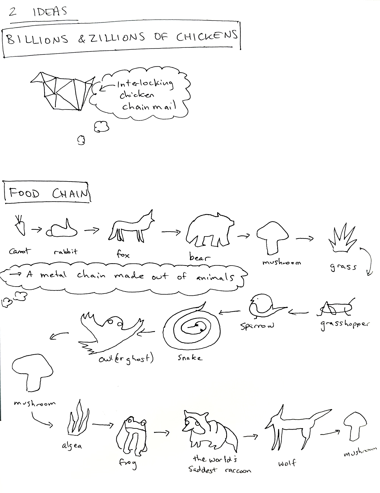
I hopped into VR and used Adobe Medium to create a 3D sketch of the chain. My first iteration was drawing 3D objects out of lines, and the challenge was to interlock all of the elements in the chain while keeping the lines a consistent thickness. Then I exported the model as an OBJ and brought it into Prusa.
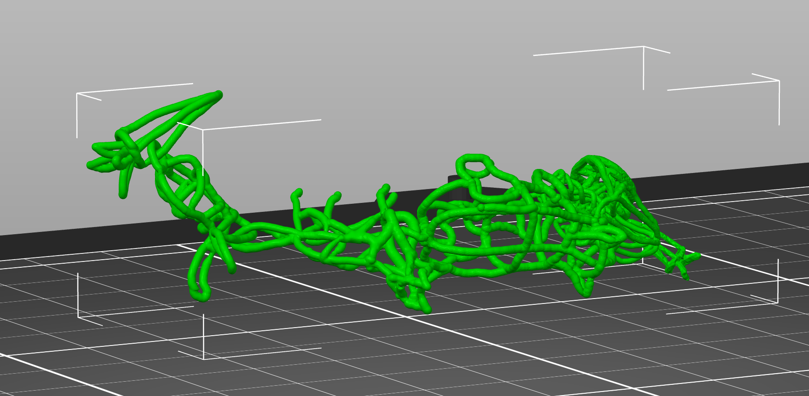
This piece was supposed to be a small metal chain where each animal/plant is about 5mm long-- but the limitations of our Prusa machines required me to scale it up, or else certain layers (in orange) wouldn't get printed, as you can see below. I set the support material to "organic" (in green) which in theory would allow me to easily remove it after printing.
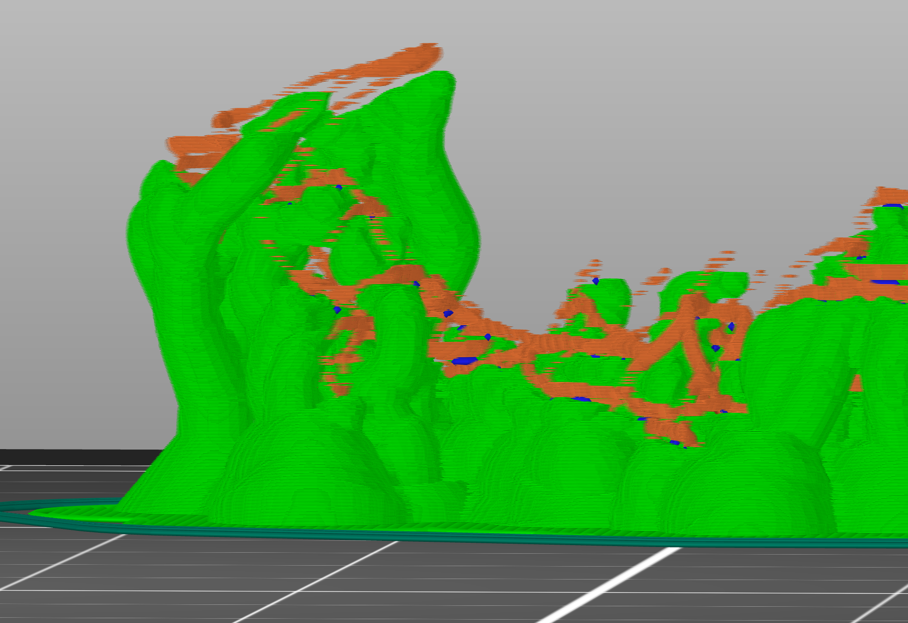
The print took about 3 hours, and failed multiple times. I printed it at two different resolutions -- the one that worked best was the highest resoltion (0.05mm) setting, which took 9 hours -- so I made sure to print it overnight on Saturday while there were 5 other printers free!
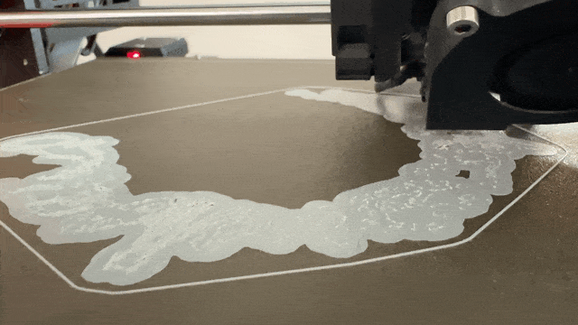
The high res print next to the lower res (0.15mm) print:
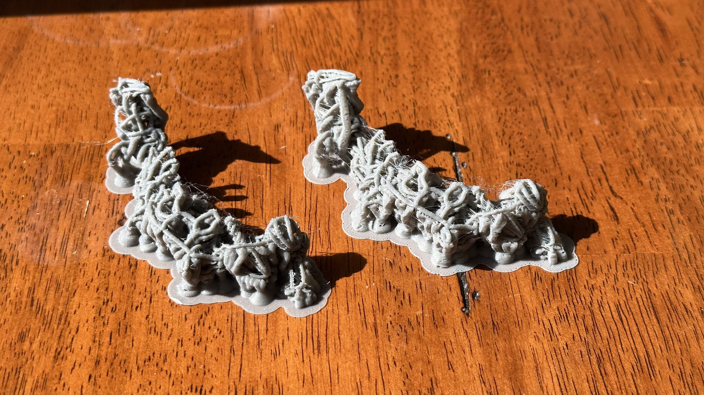
This ended up being the most tedious part of the project -- for over an hour I used a candle to heat up a scalpel, as well as tiny pliers, to pry off most of the support material. Some parts of the structure broke, and many support bits remained inaccessibly locked inside the chain.
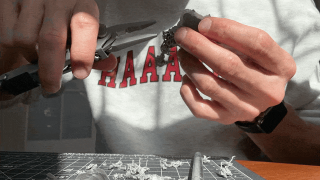
In the end, I realized that most of the plastic I'd printed had been support material, not the chain itself.
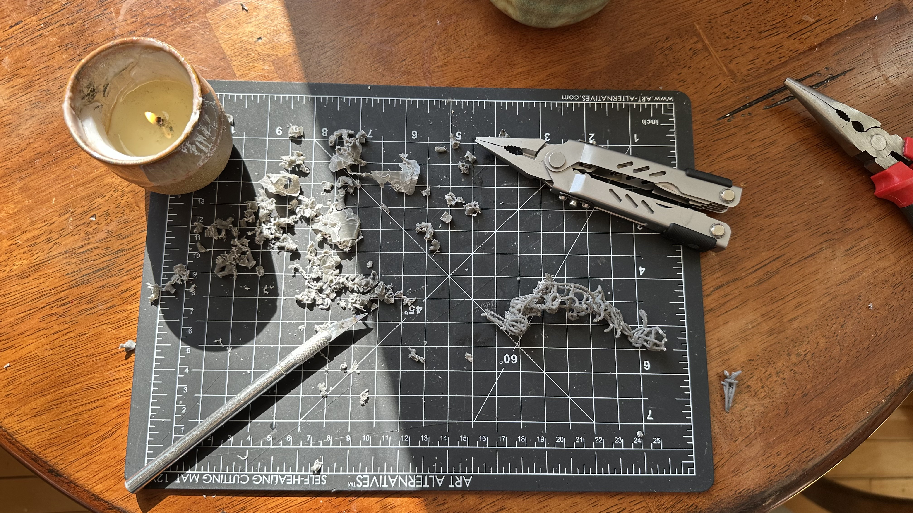
The first chain ended up so pockmarked by support connections that its animals weren't easily recognizable.
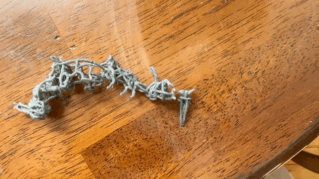
I went back into VR and redrew a new chain, from scratch -- this time, with 3D lines of 2D animal/plant drawings. This was faster the second time, but still came with challenges -- like how to deform each object to interlock with the next, along the Z-plane.
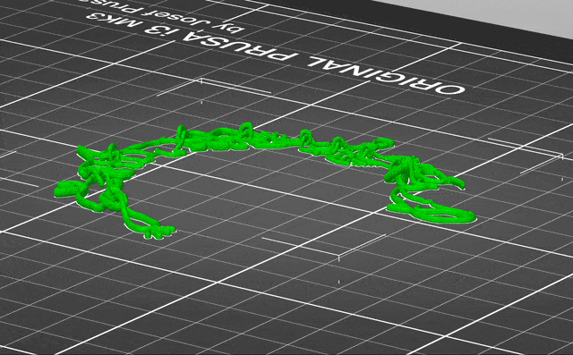
The first 3D print failed because parts of the chain didn't adhere to the print bed.
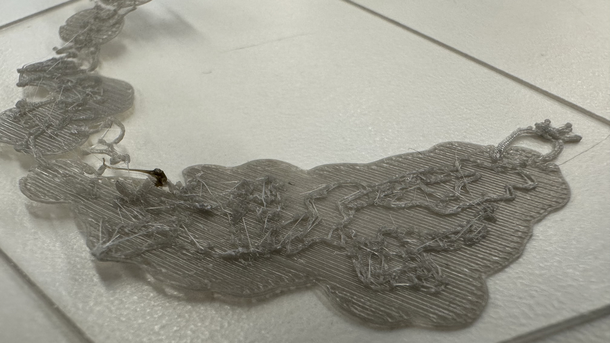
I had to manually paint on support material to make sure it would stick.
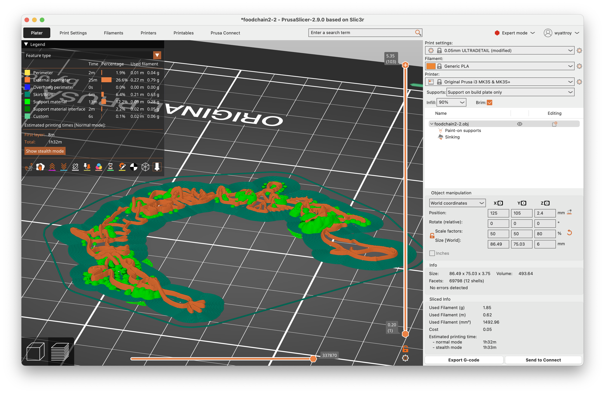
With the new supports, scaled up in size, the chain printed successfully.
Apparently you can use a heat gun to remove the support material! I didn't know this at the time. And it seems risky with such delicate forms as I was working with. So once again, I spent an hour removing the supports.
The chain is still a bit rough, but I'm happy with the result. I think it's a good example of how digital tools can be used to create something that feels organic and hand-made. For the next iteration, I want to make more organisms so that they stretch around a whole neck, print it in metal, much smaller!
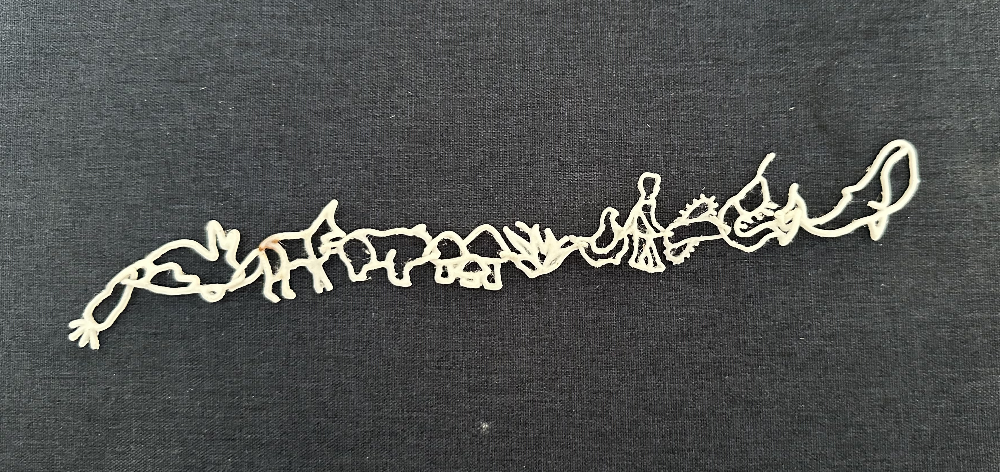
Can you tell what each of the organisms are?
Because I've worked for Polycam for so long and done photogrammetry before, I ended up teaching other students how to make scans.
Eli did an awesome job scanning my back, but faces are tough! My metling face is probably because there weren't enough images taken of my front -- either that or, I moved too much!